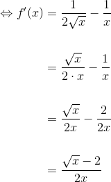
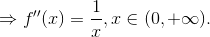

Exerciții și probleme rezolvate pentru profilul științele naturii
- Această problemă a fost dată în sesiunea iunie-iulie a anului 2012, pentru profilele științele naturii și tehnologic, la subiectul III, exercițiul 1.
Bacalaureat Matematică 2012 | Științele naturii și Tehnologic | Sesiunea iunie-iulie | Subiectul III
Se consideră funcția 
- Arătați că

- Demonstrați că funcția
 este crescătoare pe intervalul
este crescătoare pe intervalul 
- Determinați ecuația asimptotei verticale la graficul funcției .
Rezolvare:
- Calculăm
 .
.
Observăm că  .
.
Calculăm  .
.

Deci este derivabilă în . Rezultă că:

- Arătăm că funcția este crescătoare pe intervalul
- derivabilă pe  și
și  .
.
![\begin{align*} &f'(x)=0 \Leftrightarrow \frac{\sqrt{x}-2}{2x}=0 \Leftrightarrow \\ &\overset{\left[x>0\right]}\Leftrightarrow \sqrt{x}-2=0\\ &\Leftrightarrow \sqrt{x}=2\\ &\Leftrightarrow (\sqrt{x})^2=2^2\\ &\Leftrightarrow x=4 \end{align*}](https://media.liceunet.ro/files/webbooks/images/257/equations/eD8EW-bpRirAcez9wjscMg==.gif)


În concluzie, funcția  este crescătoare pe intervalul .
este crescătoare pe intervalul .
- Pentru a determina ecuația asimptotei verticale la graficul funcției calculăm


Avem că dreapta  este ecuația asimptotei verticale la graficul funcției .
este ecuația asimptotei verticale la graficul funcției .
- Această problemă a fost dată în sesiunea specială a anului 2013, pentru profilul științele naturii, la subiectul III, exercițiul 1.
Bacalaureat Matematică 2013 | Științele naturii | Sesiunea specială | Subiectul III
Se consideră funcția 
- Calculați

- Calculați

- Demonstrați că funcția
 este convexă pe intervalul
este convexă pe intervalul 
Rezolvare:
- Calculăm


- Calculăm
Fracția  este un caz de
este un caz de  , deci aplicăm regula lui L'Hôpital astfel:
, deci aplicăm regula lui L'Hôpital astfel:

- Pentru a demonstra că funcția este convexă pe intervalul
 vom calcula derivata de ordinul II.
vom calcula derivata de ordinul II.

Avem că  , pentru orice .
, pentru orice .
În concluzie, funcția este convexă pe intervalul
- Această problemă a fost dată în sesiunea august septembrie a anului 2014, pentru profilul științele naturii, la subiectul III, exercițiul 1.
Bacalaureat Matematică 2014 | Științele naturii| Sesiunea august-septembrie | Subiectul III
Se consideră funcția  ,
,  .
.
- Calculați
 .
. - Arătați că
 ,
,  .
. - Arătați că funcția
 este convexă pe intervalul
este convexă pe intervalul  .
.
Rezolvare:
- Calculăm .

- Calculăm
 .
.
 .
.
- Calculăm
 .
.
![\begin{align*} {f}''(x)&={f}'(x)={\Big[\frac{12x}{(x^2+3)^2}\Big]}'\\\\ &=\frac{{12x}'(x^2+3)^2-{[(x^2+3)^2]}'\cdot 12x}{[(x^2+3)^2]^2}\\\\ &=\frac{12(x^2+3)^2-12x\cdot 2(x^2+3){(x^2+3)}'}{(x^2+3)^4}\\\\ &=\frac{12(x^2+3)^2-24x(x^2+3)(2x+0)}{(x^2+3)^4}\\\\ &=\frac{12(x^2+3)^2-48x^2(x^2+3)}{(x^2+3)^4}\\\\ &=\frac{(x^2+3)(12(x^2+3)-48x^2)}{(x^2+3)^4}\\\\ &=\frac{12(x^2+3)-48x^2}{(x^2+3)^3}\\\\ &=\frac{12x^2+36-48x^2}{(x^2+3)^3}\\\\ &=\frac{36-36x^2}{(x^2+3)^3}\\\\ &=\frac{36(1-x^2)}{(x^2+3)^3}\\ \end{align*}](../../media/webbooks/397/2753/images/equations/8htztzviwq3kyathczxluw==.gif)

Pentru  .
.

 este convexă pe intervalul
este convexă pe intervalul  .
.
- Această problemă a fost propusă ca model pentru Bacalaureatul din anul 2015, profilul științele naturii, exercițiul 1.
Subiectul III - Simulare BAC matematică – 04.03.2015 – Profil științele naturii – Clasa a XII-a
Se consideră funcția  .
.
- Calculați
 .
. - Determinați ecuația asimptotei orizontale spre
 la graficul funcției
la graficul funcției  .
. - Determinați intervalele de monotonie a funcției .
Rezolvare:
- Calculăm .


 .
.
- Calculăm
 .
.
Aplicând regulile lui l'Hospital, obținem:


Rezultă că dreapta  este asimptotă orizontală spre la graficul funcției .
este asimptotă orizontală spre la graficul funcției .
- Pentru a determina intervalele de monotonie ale funcției , studiem semnul primei derivate al funcției pe
 .
.


![{f}'(x)\le 0,\forall x\in(-\infty,0]\Rightarrow](https://media.liceunet.ro/files/webbooks/images/169/equations/FC9Qc7uvltvQzH_W6qGKvQ==.gif) - descrescătoare pe intervalul
- descrescătoare pe intervalul ![(-\infty,0]](https://media.liceunet.ro/files/webbooks/images/169/equations/FaDwQZqCvQZFPFkGP5Gq0A==.gif)
 - crescătoare pe intervalul
- crescătoare pe intervalul  .
.
Dacă vrei să vezi și să rezolvi și alte probleme de tip Bacalaureat cu funcții derivabile, accesează eBook-urile următoare:
Bacalaureat Matematică 2013 | Științele naturii | Model de subiect | Subiectul III
Bacalaureat Matematică 2014 | Științele naturii | Sesiunea iunie-iulie | Subiectul III
Bacalaureat Matematică 2015 | Științele naturii | Sesiunea specială | Subiectul III.